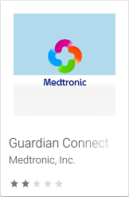

DIY Closed Loop
#WeAreNotWaiting
Thomas Liske
Teamleiter DataCenter Services
- 1997 Manifestation (ICT)
- 2003 Pumpe
- 2017 Open Looper
- 2018 Closed Looper

künstliche Bauchspeicheldrüse
Artificial Pancreas
- Bekannt: seit 100 n. Chr. diabétes als Krankheit
- Insulin: seit 1923 verfügbar
- Forschung: seit 1970 verschiedene Looping Ansätze
- Lösungen: seit 2015 DIY

#WeAreNotWaiting
Nightscout Foundation
- 2012 bei John Costik's Sohn wird T1D diagnostiziert
#WeAreNotWaiting
Nightscout Foundation
- 2012 bei John Costik's Sohn wird T1D diagnostiziert
- Dexcom G4 CGM kommt auf den Markt (USA)
#WeAreNotWaiting
Nightscout Foundation
- 2012 bei John Costik's Sohn wird T1D diagnostiziert
- Dexcom G4 CGM kommt auf den Markt (USA)
- Hilft nicht unter der Woche!
#WeAreNotWaiting
Nightscout Foundation
- 2012 bei John Costik's Sohn wird T1D diagnostiziert
- Dexcom G4 CGM kommt auf den Markt (USA)
- Hilft nicht unter der Woche!
- → John entwickelt DIY Lösung
#WeAreNotWaiting
Nightscout Foundation
- 2012 bei John Costik's Sohn wird T1D diagnostiziert
- Dexcom G4 CGM kommt auf den Markt (USA)
- Hilft nicht unter der Woche!
- → John entwickelt DIY Lösung
- → Social Media Postings gehen "viral" @jcostik
#WeAreNotWaiting
Nightscout Foundation
- 2012 bei John Costik's Sohn wird T1D diagnostiziert
- Dexcom G4 CGM kommt auf den Markt (USA)
- Hilft nicht unter der Woche!
- → John entwickelt DIY Lösung
- → Social Media Postings gehen "viral" @jcostik
- 2013Veröffentlichung durch Nightscout Foundation

#OpenAPS
Open Artificial Pancreas System
- 2013
Dana M. Lewis dated Scott Leibrand
he asked why my CGM didn’t talk to my insulin pump - Dana und Scott entwickeln "DIYPS" System
- 2014 Ben West entdeckt Möglichkeit eine Insulinpumpe zu steuern
- 2015 Veröffentlichung von OpenAPS

#OpenAPS
Open Artificial Pancreas System
Idee
- Entwicklung einer offenen* künstlichen Bauchspeicheldrüse
- Nutzung von Schnittstellen existierender medizinischer Produkte
- Automatisierung & Verbesserung der sonst manuell gefällten Entscheidungen
- Steuerung durch TBR → Fail-safe Design
- Nutzer sind Forscher und Studie (n=1) zugleich
- Mensch vs. Statistik
Ziel
- Verbesserung der Lebensqualität
- Risikoreduzierung für Folgeerkrankungen
- schnelle Verfügbarkeit für jeden
kommerzielle Apps 👎
- 
- Bewertung ∅ 2,6 ★
- Stand Januar 2020
WARNUNG
- verwende was du verstehst
WARNUNG
- verwende was du verstehst
- nutze was dir hilft
WARNUNG
- verwende was du verstehst
- nutze was dir hilft
- alles ist fehlerhaft
WARNUNG
- verwende was du verstehst
- nutze was dir hilft
- alles ist fehlerhaft
- Sicherheit geht vor
-
Betroffene

-
Betroffene
-
Gesellschaft & Umfeld

-
Betroffene
-
Gesellschaft & Umfeld
-
Medizin

Zahlen, …
| Quartal | HbA1c | TBR | TIR | TAR |
|---|---|---|---|---|
| Q1 2019 | 6,2 % | 8,4 % | 72,0 % | 19,6 % |
| Q2 2019 | 6,6 % | 12,7 % | 73,6 % | 13,7 % |
| Q3 2019 | 6,1 % | 10,7 % | 79,9 % | 9,4 % |
| Q4 2019 | 6,3 % | 12,8 % | 72,7 % | 14,5 % |
Zielbereich: 3,9 mmol/l – 10 mmol/l
Zahlen, …
| Quartal | HbA1c | TBR | TIR | TAR |
|---|---|---|---|---|
| Q1 2019 | 6,2 % | 8,4 % | 72,0 % | 19,6 % |
| Q2 2019 | 6,6 % | 12,7 % | 73,6 % | 13,7 % |
| Q3 2019 | 6,1 % | 10,7 % | 79,9 % | 9,4 % |
| Q4 2019 | 6,3 % | 12,8 % | 72,7 % | 14,5 % |
your diabetes may vary
Y D M V
Meine Anforderungen
- muss offline funktionieren
- keine steuernde Cloud-Lösung
- möglichst wenige Zusatzgeräte
- muss besser sein als ich
AndroidAPS
Bild: AndroidAPS-Dokumentation
AndroidAPS – CGM / FGM
- Dexcom G6
Dexcom App (Patch) | xDrip+ App - Dexcom G5
Dexcom App (Patch) - Libre 2
Transmitter | direkt - Libre 1
Transmitter - Eversense
Dexcom App (Patch) & ESEL App - MM640g / MM630g
600SeriesAndroidUploader App via Nightscout - PocTech CT-100
PocTech App
CGM mit Freestyle Libre 2
- bei Start des Sensors einmalige Bluetooth-Kopplung möglich
- Sensor überträgt einen Messwert pro Minute
Lesegerät oder LibreLink App
CGM mit Freestyle Libre 2
- bei Start des Sensors einmalige Bluetooth-Kopplung möglich
- Sensor überträgt einen Messwert pro Minute
Lesegerät oder LibreLink App
- App erzwingt Online-Kopplung
- App bietet keine API
- App zeigt über Bluetooth empfangene Messdaten nicht an
- LibreLink App reagiert nur auf Schwellwerte (niedrig & hoch)
- Verschleierung der Messwerte via NFC (Libre 2)
CGM mit Freestyle Libre 2
-
Nightrider BluCon
- Funktion ✔
- Stabilität ✔
- Größe ❌
- DIY xDrip+ (z.Zt. kein Libre 2)
-
MiaMiao 2
- Funktion ❌
- Stabilität ❌
- Größe ✔
- DIY Tomato
-
Libre 2
- Funktion ✔✔
- Stabilität ❌
- Größe ✔✔
- DIY patched LibreLink
-
Bubble
- Funktion ✔✔
- Stabilität ✔
- Größe ✔
- DIY DiaBox
CGM mit Freestyle Libre 2
aktueller Ansatz
- Start des Sensors mit patched LibreLink App
- Nutzung ohne Transmitter so lange es funktioniert
manchmal wenige Tage, selten fast die gesamte Laufzeit - Rückgriff auf Bubble Transmitter sobald nötig
- mit Tacky Spezial
Doppelklebeband ausschließlich direkt auf
Sensor kleben
- stabile NFC-Kopplung
- keine weitere Klebestelle auf der Haut
- keine Hebelwirkung auf den Sensor
- Kalibrierung im xDrip+ muss beim Wechsel zurückgesetzt werden ⚠
Nightscout xDrip+
- Kalibrierung für Libre
Erhöhung der Genauigkeit der BZ-Werte - gute Visualisierung
anderes Vorhersagemodell als AndroidAPS ⚠ - flexible Alarmierung
- Sync Groups mit anderen Mobilgeräten
gleiche Daten für Eltern oder Partner - von vielen DIY Apps unterstützt
AndroidAPS – Pumpen
- DanaR
- DanaRS
- Accu-Check Insight
- Accu-Check Combo
ruffy App - Medtronic
RileyLink Bridge - ICT & Virtuelle Pumpe
Open Loop
Pumpe
-
Accu-Check Spirit Combo
- Pro ✔
- bewährt
- AA Batterie
- Contra ❌
- kein SMB
- DIY ruffy
-
Dana RS
- Pro ✔
- offen für DIYPS
- Contra ❌
- wenig verbreitet
- properitäre Batterie
- Luer mit Linksgewinde
- DIY AndroidAPS
AndroidAPS – Smartwatch
- WearOS
inklusive Steuerung - Garmin
Visualisierung via Connect IQ
Garmin fēnix
- lange Laufzeit
- verschiedene Apps
- xDrip+ Watchface
- xDrip+ Widget
- xDrip+/Spike Datafield
Nightscout Monitor
- Protokollierung
Behandlungen & BZ - lesender Zugriff
für den Arzt - statistische Auswertungen
- Visualisierung
- kann überall betrieben werden
Cloud, Hosted, On Premise, …

Quellen und Links
- Genome | #WeAreNotWaiting
- Dana M. Lewis | Automated Insulin Delivery
- OPENAPS.ORG | #WeAreNotWaiting to reduce the burden of Type 1 diabetes
- DIYPS.org | #WeAreNotWaiting to make the world a better place
- Diabetiker Thueringen e.V. | Geschichte der Diabetologie
- JDRF | New Initiative to Pave Way for Open Protocol Automated Insulin Delivery Systems
- JDRF | Statement on type 1 diabetes ‘DIY’ technologies
- Diabetes Therapy | Use of Continuous Glucose Monitoring in People with Type 1 Diabetes: Perspectives of Two People with Diabetes and Physician Perspective
- Diabetes Care | Clinical Targets for Continuous Glucose Monitoring Data Interpretation: Recommendations From the International Consensus on Time in Range
- bgonmywatch | Libre 2 can we make it into full CGM?
Vielen Dank!
https://fiasko.io/